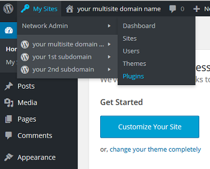

Set Up WordPress Domain Mapping on CentOS 7, Fedora
Set Up WordPress Domain Mapping - CentOS 7, Fedora
Difficulty: 1
Time: 5 minutes
The WordPress MU Domain Mapping plugin lets you point multiple domains to one WordPress account.
This means that you can make a network site into its own unique, standalone domain. In this article, we'll map a subdomain to an independent domain. For example, coolexample.net would redirect to product.coolexample.com, a subdomain of your primary site, coolexample.com.
Prerequisites
You should have WordPress multisite installed:
You should have unzip installed.
- To install
unzip:sudo yum install unzip
If prompted, enter y to continue installation.
Download the plugin
- Download the plugin:
cd ~ wget http://downloads.wordpress.org/plugin/wordpress-mu-domain-mapping.latest-stable.zip
- Unzip the plugin.
unzip wordpress-mu-domain-mapping.latest-stable.zip
- Move the files to the WordPress
/wp-content/plugins/ directory.
sudo mv wordpress-mu-domain-mapping
/var/www/html/wp-content/plugins/
- Copy the
sunrise.php into the WordPress document root.
sudo cp /var/www/html/wp-content/plugins/wordpress-mu-domain-mapping/sunrise.php
/var/www/html/wp-content/
Edit your wp-config file
- Go to your WordPress document root.
cd /var/www/wordpress
- Open your
wp-config file.
sudo vim wp-config.php
- Add this line before
/* That's all, stop editing! Happy blogging. */.
define('SUNRISE', 'on');
- Save and close.
- Restart Nginx.
sudo service nginx restart
Activate Domain Mapping
- Return to your wp-admin window

- In the top navigation bar, hover/mouse over My Sites, select Network Admin from the drop-down menu, and then select Plugins.

You'll see three plugins. The WordPress MU Domain Mapping plugin should be the third item.
- Under this plug-in, click Network Activate. The Plugins dialog will highlight, indicating it's activated.
- In the menu bar on the left-hand side, point to Settings, and then select Domain Mapping from the menu that appears.

- Under Domain Options, clear the Remote Login check box.
- Select the Permanent Redirect check box.
- Clear the Redirect administration pages to site's original domain check box.
- Click Save.
Your external domain now redirects to the subdomain you defined. For example, coolexample.net redirects to product.coolexample.com. This includes the administration pages /wp-admin.
Map a domain name to each site based on site ID
Now we'll map a domain name to each site based on its site ID. There's more than one way to find the ID of a site, but for easier administration, we'll create a simple WordPress Multi-use plugin that displays an additional ID column on the Sites page.
- In your terminal, create a directory to house the plugin.
cd ~
sudo mkdir /var/www/wordpress/wp-content/mu-plugins
- Create a new file.
sudo vim /var/www/wordpress/wp-content/mu-plugins/wpms_blogid.php
This new file is blank.
- Copy this whole code block, and paste it into your file.
>?php
add_filter( 'wpmu_blogs_columns', 'do_get_id' );
add_action( 'manage_sites_custom_column', 'do_add_columns', 10, 2 );
add_action( 'manage_blogs_custom_column', 'do_add_columns', 10, 2 );
function do_add_columns( $column_name, $blog_id ) {
if ( 'blog_id' === $column_name )
echo $blog_id;
return $column_name;
}
function do_get_id( $columns ) {
$columns['blog_id'] = 'ID';
return $columns;
}
?>
- Save and close.
- Back in the WP-Admin browser window, find the additional ID column in the Sites > All Sites section, and note the ID for your subdomain that you'll be mapping.
Map your domains
- Make a note of the ID value for each site.
- Go to the Settings > Domains page.
- Enter the site ID followed by the external domain for the site.

Next steps
Congratulations! Each site that you defined with its own domain name can now be accessed that way. You can test it by visiting it. You'll see the URL redirect to the subdomain of your primary site.
Now you can maintain each site separately through its own WordPress admin panel. Just append /wp-admin/ to the URL (for example, coolexampleproduct.com/wp-admin/).